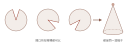

褶子逐一認過之後，回到派對帽。前面為何特別談它？因為一件至關緊要的事——轉褶。
派對帽攤平之後，是一個扇形。那麼，扇形的「開口」開在哪裡，會不會影響它成為一頂派對帽？不會。不妨一試：把派對帽摺起來之後，任取一處剪開、一路剪到頂點——它依然可以重新攤平。
這正是轉褶的意涵：只要能剪開、把紙型重新攤平，褶子就能搬家；只要能再車起來，就能重新塑回原本的那個空間。
這是許多人不敢跨出的一步——「褶子長在那裡，就一定得那麼做」。並非如此。版型之美，正在於每個人對剪的位置、剪的方式、乃至細小修補的取捨各不相同，塑出來的版型因而各異其趣。這一點，極為要緊。
轉褶的操作是：先把褶子收起來，向尖點剪去——甚至未必要剪到尖點，操作的路數遠比想像中多——再把紙型攤平。只要裁得下、車得起來，它便能重新成為一根新的褶子。把所有褶子轉得極碎、或是整個拉開，都是辦得到的事。
